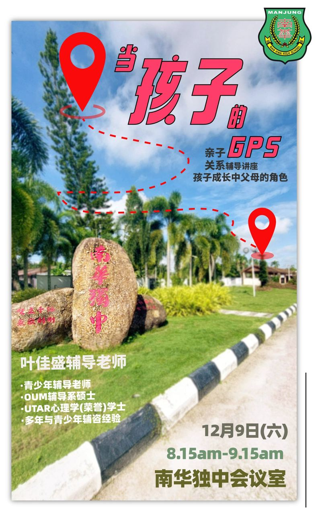

亲子关系辅导讲座：当孩子的GPS
亲子关系辅导讲座：当孩子的GPS
日期：12月9日（星期六）
时间：8:15am – 9:15am
地点：南华独中会议室
主讲人：叶佳盛辅导老师
· 青少年辅导老师
· OUM辅导系硕士
· UTAR心理学(荣誉)学士
· 多年与青少年辅咨经验
在这个纷繁复杂的成长之路上，
我们每一位都是孩子人生旅途中不可或缺的导航员。
南华独中特邀您参加一场别开生面的亲子关系辅导讲座，题为“当孩子的GPS，孩子成长中父母的角色”。经过深入探讨家长在引导孩子成长的道路上扮演的至关重要的角色，正如导航员为船只指引前行般，扮演孩子人生旅途中的引导者。在这个信息迅速传播、社会变革快速的时代，深知理解孩子的内心需求和提供正确的引导。
#亲子关系 #辅导讲座 #成长 #父母 #父母角色
#南华独中 #曼绒 #实兆远
